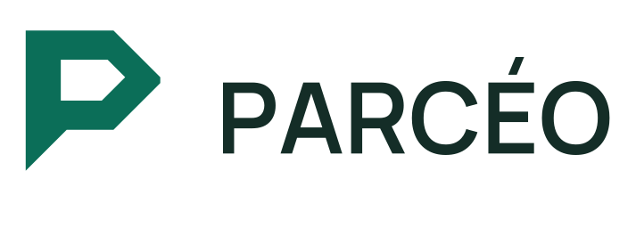
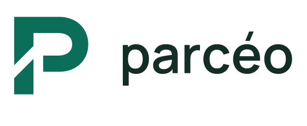
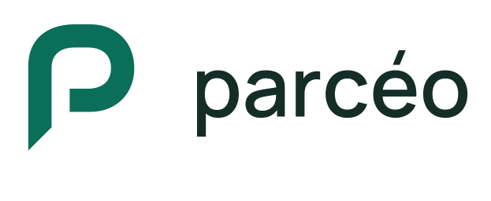
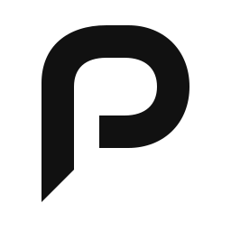

A / PRISME


Prisme
Une silhouette taillée à 45°, plus architecturale. Le nom en capitales renforce son caractère technique.
48 PX
32 PX
16 PX
Trois écritures du P : une découpe franche, une jonction ouverte, un ruban continu.


Une silhouette taillée à 45°, plus architecturale. Le nom en capitales renforce son caractère technique.


Un passage diagonal traverse le P. Deux parties alignées évoquent le matériel qui circule dans un ensemble organisé.

Un tracé continu et une terminaison en biais. Plus fluide, avec une silhouette adaptée à une marque de logiciel.

48 PX